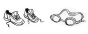
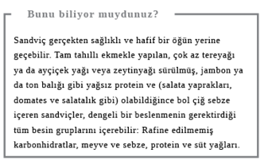
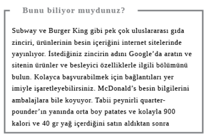
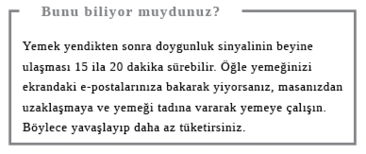

Öğle Yemeği
Milyonlarcamız öğle yemeğimizi masamızda oturup günboyu çalışmaya ara vermeden yiyoruz ya da tamamen atlıyoruz. Zorlu ekonomik dönemlerde işimizi kaybetme tedirginliği, iş yaparken görünme ihtiyacımızı tetikliyor ve tabii bazen iş baskısı da durup nefes almamızı engelliyor. Ama yemek atlamak bir alışkanlığa dönüşürse hem fiziksel hem de zihinsel hasarlara yol açabilir.
Ne Yemeli?
Hızlı ve sağlıklı bir öğlen molası vermenin en iyi yolu...
Zengin bir öğle yemeği mi, zengin bir akşam yemeği mi?
Yemek yediğimizde sindirilen besinlerin bir kısmı kan şekerine (yani glukoza) dönüşür ve bu süreç de insülin hormonuyla dengelenir. Fazla miktarda yemek yemekse uykumuzu getirir çünkü bilimcilere göre bizi uyanık tutan beyin hücreleri yemekten sonra yükselen kan şekeriyle baskılanır. Evrimsel bir tepki olabilir bu. Atalarımız için yemeği bulup yedikten sonraki vakit, uyuma ve enerji koruma vaktiydi. Vücudumuzun kan şekerine dönüştürdüğü makarna gibi bazı besinler, ötekilere kıyasla daha fazla uyku verir. Dolayısıyla tatilde değilseniz veya hafta sonu değilse ve öğleden sonra uyanık kalmak istiyorsanız, uzun keyfi bir öğle yemeğinden kaçının. Makarnayı, sonrasında iyi bir uykuya ihtiyaç duyacağınız akşam yemeğine saklayın.
Yanıt: Zengin bir akşam yemeği
Dürüm mü, sandviç mi?
Şöyle çabucak yiyecek bir şeyler almak için dışarı çıktınız ama epey açsınız ve basit bir sandviçten daha tatmin edici bir şeyler istiyorsunuz. İçi sevdiğiniz malzemelerle dolu fırından yeni çıkmış bir baget aklınızı çeliyor. Dürüm de güzel görünüyor ama içinde daha çok malzeme olduğundan, daha kilo aldırıcı olduğunu düşünüyorsunuz. Öyle değil mi?
Aslında dürüm, sandviç tarzı bir öğün için idealdir çünkü iç malzemenin ekmeğe oranı yüksektir ve insanı tok tutan da iç malzemedir; özellikle de tavuk gibi yağsız bir protein, bolca çıtır salata ve çiğ sebze seçtiyseniz. Lavaşın GI (Glisemik İndeks) değeri bagetten daha düşüktür ki bu da vücudunuzun, lavaşın verdiği enerjiyi daha yavaş yakacağı, kısa sürede acıkmayacağınız anlamına gelir. Lavaşın üstüne tereyağı sürmediğiniz sürece bol miktarda kalori ve doymuş yağdan kurtulmuş olursunuz. Kitabın yazıldığı sırada, örneğin, ünlü sandviç zincirlerinden birinde satılan, acılı karides salatalı kerevitli dürüm 298 kalori ve 10 gr yağ içerirken, aynı yerin mayonezli bageti 484 kalori ve 22,9 gr yağ içeriyordu; günlük izin verilen değerin neredeyse üçte biri. Ancak dürümlerde mayonez gibi yağlı soslardan kaçının.
Yanıt: Dürüm


Mayonez mi, tereyağı mı?
İncecik sürülmüş 7 gr’lık light mayonezin içeriği 23 kalori ve 2,3 gr sebze yağlarından yapılma yağ iken, aynı miktarda tereyağınınki 50 kalori ve 12 gr doymuş yağdır. Light olmayan mayonez bile daha az kalori içerir. Tereyağı sütten yapıldığı için yüksek miktarda doymuş yağdan yana zengin hayvansal yağ içerir. Hayvansal yağ da kolesterolü yükselterek kalp ve kardiyovasküler sisteme zarar verebilir. En iyisi öğlen sandviçinize tereyağı yerine light mayonez sürdürün.
Yanıt: Mayonez
Çorba mı, salata mı?
Her ikisi de kulağa sağlıklı geliyor; tabii içi olabildiğince bol sebze, meyve ve yağsız et ya da balıkla doluysa. Ancak yağlı soslar veya bolca peynir içeren salatalara; tat vermesi için krema, tuz ya da çorizo (salam, sucuk, sosis tarzı) gibi yağlı etler eklenmiş veya patates, makarna, pirinç katılmış çorbalara dikkat edin. Sıcak bir yaz gününde canınız doğal olarak buharı tüten bir çorba istemeyecektir ama çorba kışın içinizi ısıtıp sizi rahatlatır. Hem daha doyurucu da olabilir; yeni bir televizyon araştırması pirinç, tavuk, sebze ve su içeren harmanlanmış bir çorbayı içen askerlerin, aynı gıdaları bir bardak suyla katı besin olarak yiyenlerden daha uzun süre tokluk hissettiklerini ortaya koydu. Neden mi? Harmanlanmış yemek daha hacimli olduğu için mideden o kadar hızlı geçemez de ondan.
Yanıt: Çorba
Suşi mi, saşimi mi?
Artık pek çok fast-food dükkânında ve süpermarkette bulunabilen bu Japon lezzetlerinin sağlık açısından çeşitli yararları olduğuna şüphe yok. Her ikisi de kalp sağlığı için önem taşıyan ve somon, ton gibi yağlı balıklarda bulunan omega 3 yağ asitlerini; A, B, C ve E vitaminlerini; hücreleri ve metabolizma hızını sağlıklı kılan (yosundaki) ender element “iyot”u içerir.

Sade pilav da iyi bir karbonhidrat kaynağıdır ve suşi’de az miktarda olduğundan, midenizde ağırlık hissi yaratmaz. Hamileler, ton balığı gibi derin deniz balıklarındaki cıva seviyelerine dikkat etmeli, yedikleri yağlı balık oranını sınırlı tutmalılar. Çiğ deniz kabuklularından ise hiç yememeliler. İngiltere’de, resmi önerilere göre, çiğ yenecek balıkların önceden dondurulmuş olması gerekir. Suşi satan restoran ve dükkânlar olası tüm zararlı bakterilerin öldürülebilmesi için yasal olarak bunu yapmak zorundalar. Kısacası suşi genel olarak iyi ve hafif bir tercih. Ancak hareketli bantta ürün sunan restoranlarda dikkatli olun, gereğinden fazla tüketebilirsiniz.
Suşi ile saşimi arasında tercih açısından büyük bir fark yok ama suşi’de pirincin proteine ve sebzeye kıyasla yüksek oranda olması, kilosuna dikkat edenleri çiğ ya da tütsülenmiş balıktan yapılan saşimi’ye yöneltebilir. İsterseniz bir ya da iki suşi veya yanında çiğ soya fasulyesi gibi bir sebzeyle biraz pilav sipariş edebilirsiniz.
Yanıt: Saşimi


Ne İçmeli?
Öğle yemeğinde bolca su içmek iyi bir fikirdir. Vücudumuzun üçte ikisi sudan oluşur ve önerilen sıvı tüketimi günde 1-1,5 litre kadardır. Bu miktara diğer içecekler de dâhil olabilir ama onlar su kadar sağlıklı değildir. Örneğin, sadece kahve ve gazlı içeceklerden oluşan sıvı tüketimi pek iyi bir tercih olmayabilir.
Soda mı, su mu?
Günboyu sıkışık bir ofiste oturuyorsanız veya sağa sola koşturup iş yapıyorsanız, vücudunuz susuz kalabilir. Bu da sizde uykulu bir hal ve aksilik yaratabilir. Beynin canlı kalmak için suya gerçekten ihtiyacı var. Ama yemeğinizin yanına su alıyorsanız veya restoranda sipariş veriyorsanız ve gazlı içeceğin sağlık için iyi olmadığını duyduysanız, ne yapmalısınız?
Sodanın içindeki baloncukları oluşturan şey, sıvıya eklenen karbondioksittir. İyi de o, küresel ısınma korkularımızı depreştiren şu berbat sera gazı değil miydi? Hem gazlı içecekler diş minesini eriten, kemikleri çürüten asitle dolu değil miydi? Sodanın içindeki karbondioksit miktarı gözardı edilebilir derecededir ve bu yüzden de size zarar verme ihtimali pek yoktur. Diş hasarı ise tatlandırılmış alkolsüz içeceklerdeki veya meyve suyundaki şeker ve asitle ilgilidir, baloncuklarla değil. Dolayısıyla endişelenecek pek bir şey yok; tek bir nokta hariç. O gazın bir yere gitmesi gerekir -sindirim sisteminiz- ve dışarı çıkışı da gün içinde utanç verici bazı sosyal problemler yaratabilir; özellikle de şişkinliğe yatkınlığınız varsa.
Yanıt: Su
Ofisten Dışarı Çıkış
Gün ortasında ofisten dışarı çıkmak için birkaç iyi neden vardır, bunlardan ilki zihninizi açmaktır.
Egzersizi içeride mi yapmalı, dışarıda mı?
Resmi önerilere göre haftada en az 150 dakika egzersiz yapmanız gerekir. Programınızın yoğunluğu buna izin vermiyorsa her gün üç tane 10’ar dakikalık egzersiz bile kan akışınızı hızlandıracak, kaslarınızı hareket ettirecektir. Motivasyonunuzu kaybetmemek için iş arkadaşınıza eşlik edebilir veya bir grup toplayarak haftada bir defa açıkhavada futbol maçı yapabilir, parkta frizbi oynayabilirsiniz. Yapılan çok sayıda çalışma doğayla temasın, hastalıktan sonra toparlanma oranını arttırmaktan tutun da, antisosyal davranışları azaltmaya, yaratıcılığı arttırmaya kadar pek çok yararı olduğunu ortaya koydu. ABD’de Rochester Üniversitesi’nde yapılan bir çalışma, yapboz kitabındaki yeşil mürekkebin bile katılımcılardan kırmızıya kıyasla daha iyi sonuç alınmasını sağladığını gösterdi. Öğle tatilinde bir yeşillik bulamazsanız, kendinize saksıda bitki alın, evdeyseniz de duvarları yeşilin dinlendirici bir tonuna boyayın.
Yanıt: Dışarıda

Arkadaşla mı buluşmalı, yalnız mı yemeli?
İşiniz yoğunsa ve akşama ailevi ya da sosyal sorumluluklarınız varsa sessiz sakin bir öğle molası, gün içinde kendinize ayırabileceğiniz tek vakit olabilir. Ne var ki öğlenleri hep aynı şeyi yaparak bir rutine kapılmak da kolaydır. Örneğin, mağaza dolaşmak, aynı büfeye, aynı cafeye gitmek…
Oysa sıkça göremediğiniz arkadaşlarınız ve meslektaşlarınızla buluşmak, daha geniş bir sosyal ve profesyonel ağla teması sürdürmenin önemli bir yoludur. Ayrıca ofiste moralinizi bozan şeyler varsa sorunu paylaşmanız da iyi gelebilir. Gidişat iyice kötülerse o zaman da profesyonel ağınız, yeni bir iş bulmanızda hayati rol oynayabilir. Evden çalışıyorsanız “yemeğe çıkmak” kapalı mekân sıkıntısını ve tecrit duygunuzu yok edebilir.
2009’da Harvard Business Review’da yayınlanan en yaratıcı yöneticilerle yapılan son derece ilginç bir çalışma, bu kişilerin mükemmel “keşif becerileriyle” öne çıktıklarını gösterdi. Bu yöneticiler daima yeni bağlantıların, fikirlerin ve deneyimlerin peşindeydi. Yeni bakış açıları geliştirmede farklı çevrelerle temasta olmanın çok önemli olduğunu düşünüyorlardı. Eh, Bill Gates yapabiliyorsa…
Yanıt: Arkadaşla buluşmalı

Yüzmeli mi, koşmalı mı?
Öğlen dışarı çıkmayı seviyorsanız ve formunuz yerindeyse yarım saati en iyi şekilde değerlendirmenin yolu nedir? Yanınıza almanız gereken şeyler; duş, maliyet ve erişilebilirlik gibi kaygılar, olumlu bazı niyetlerinizi suya düşürebilir. İşi basite indirgemek istiyorsanız, çok enerjik adımlarla (8 km/s) yürüyüş, 30 dakikada 250 kalori yakmanızı sağlar; tek kişilik tenis maçı kadar. Enerjik ritmle yüzme ise 300 kalori harcatır ve tüm vücudu çalıştırmak için harika bir yöntemdir ama hem maliyetlidir hem de havuza gitmek, sonrasında saç kurutmak için vakit ayırmayı gerektirir. Kalori yakmak için gerçekten etkili bir yöntem arıyorsanız ve eklemler için kaygılanmasına gerek olmayan şanslılardansanız, koşmanın üstüne yoktur: 13 km/s ile koşarak, yarım saatte 400 kalori yakabilirsiniz ki bu da dolgun bir sandviçin kalori miktarına eşittir. İşte öğle yemeğini yaktınız bile.
Yanıt: Koşmalı
Güneş kremi mi, korumasız cilt mi?
Öğle molasını dışarıda egzersiz yapmak için kullanıyorsanız ne âlâ! Ancak gün ortası, özellikle de yazın, güneşin en etkili olduğu saattir. Dolayısıyla güneş kremi sürmeyi gözardı etmeyin. Ancak son çalışmalar biraz aşırıya kaçtığımızı gösteriyor. Bazılarımızda D vitamini eksikliği var. Genel olarak sağlık ve gelişim, özel olarak da güçlü kemikler için hayati önem taşıyan bu vitamini vücudumuz doğrudan güneş ışığına maruz kaldığında üretiyor. O halde güneşe korumasız mı çıkmalı?
Doktorlar yaz aylarında (Nisan’dan Eylül’e) her hafta çıplak kolları ve yüzü iki veya üç defa, 20 ila 30 dakikalık sürelerle güneşlendirmeyi öneriyor. 20 ya da 30 dakika uzun bir süre değil, dolayısıyla vücudunuzu düzenli olarak giysiyle korumuyor ve doktorların önerisine uymayı ihmal ediyorsanız, güneş kremi sürmeniz iyi olacaktır. Kremde UVA koruma faktörü olmasına dikkat edin (UVA bir çeşit ultraviyole ışınıdır). Bu bilgiyi genelde şişenin arka tarafında, yıldız sembolleri şeklinde bulabilirsiniz. Söz konusu bilgi çok önemlidir çünkü sizi giderek artış gösteren cilt kanserine karşı koruyan bir özelliktir. Olabilecek en fazla sayıda yıldızlı ürünü seçin.
Çoğu üründe güneş koruma faktörü (SPF) ambalajın ön kısmında yer alır. SPF ürünün yanmaya karşı ne kadar koruma sağladığını gösterir, hangisini seçeceğiniz ise cilt renginizin ne kadar açık olduğuna ve ne kadar bronzlaşmayı istediğinize bağlıdır. Kullanım miktarı ve türü konusunda resmi herhangi bir öneri yok ama SPF 15’in yeterli olduğu düşünülüyor. Şüphe ediyorsanız en yükseğini seçin.
Yanıt: Güneş kremi